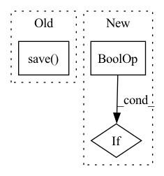

Pattern ID :6139
Before Change
print("finished training in", training_time, "seconds")
if saved_model is not None:
os.makedirs(os.path.dirname(saved_model), exist_ok=True)
torch.save( {"encoder_state_dict": encoder.state_dict(),
"losses": losses,
"training_time": training_time},
saved_model)
return losses
def run_training():After Change
losses.append(loss.item())
print("step:", step, "loss:", loss.item())
if (saved_model is not None and
(step + 1) % myconfig.SAVE_MODEL_FREQUENCY == 0) :
save_model(saved_model + "-" + str(step + 1),
encoder, losses, start_time)
In pattern: SUPERPATTERN
Frequency: 3
Non-data size: 3
Instances Fragment ID: 21138448
Project Name: wq2012/speakerrecognitionfromscratch
Commit Name: c8b771e4d235d50bb9a41369f90121e9504ae802
Time: 2022-05-08
Author: quanw@google.com
File Name: neural_net.py
M Class Name: AnonimousClass
N Class Name: AnonimousClass
M Method Name: train_network(2)
N Method Name: train_network(2)
M Parent Class:
N Parent Class:
M File Name: neural_net.py
N File Name: neural_net.py
M Start Line: 58
M End Line: 89
N Start Line: 67
N End Line: 100
Before Change
output_file_path (Path): Path where storing the output file.
with TemporaryDirectory() as temp_dir:
tf.saved_model.save( model, export_dir=temp_dir)
try:
subprocess.check_output(["python3", "--version"])
python_cmd = "python3"After Change
try:
if isinstance(model, tf.keras.Model) or (
isinstance(model, TensorFlowTransformerWrapper)
and isinstance(model.core_model, tf.keras.Model)
) :
return convert_keras_to_onnx(model, model_params, output_file_path)
else:
return convert_tf_saved_model_to_onnx(model, output_file_path) Fragment ID: 21138447
Project Name: nebuly-ai/nebullvm
Commit Name: e24d9433b15969ee0bd75ccbb7f3f6b88eca4a41
Time: 2023-01-03
Author: v.sofi@nebuly.ai
File Name: nebullvm/operations/conversions/tensorflow.py
M Class Name: AnonimousClass
N Class Name: AnonimousClass
M Method Name: convert_tf_to_onnx(3)
N Method Name: convert_tf_to_onnx(2)
M Parent Class:
N Parent Class:
M File Name: nebullvm/operations/conversions/tensorflow.py
N File Name: nebullvm/operations/conversions/tensorflow.py
M Start Line: 22
M End Line: 54
N Start Line: 17
N End Line: 44
Before Change
del kwargs["get_data"]
self.model._train(epoch, validate_func=self.validate_func, loss_fn=self.loss_fn, **kwargs)
if save:
self.save(epoch=epoch)
def get_filename(self, epoch: int, mark_alpha: float = None, target_class: int = None, **kwargs):
if mark_alpha is None:
mark_alpha = self.mark.mark_alphaAfter Change
self.percent: float = percent
def attack(self, epoch: int, save=False, get_data=None, loss_fn="self", **kwargs):
if isinstance(get_data, str) and get_data == "self" :
get_data = self.get_data
if isinstance(loss_fn, str) and loss_fn == "self":
loss_fn = self.loss_fn Fragment ID: 21138445
Project Name: ain-soph/trojanzoo
Commit Name: bd7dcc9f5a699ed9abf0fe12264a8743677e0cf4
Time: 2020-07-19
Author: ain-soph@live.com
File Name: trojanzoo/attack/backdoor/badnet.py
M Class Name: BadNet
N Class Name: BadNet
M Method Name: attack(5)
N Method Name: attack(3)
M Parent Class: Attack
N Parent Class: Attack
M File Name: trojanzoo/attack/backdoor/badnet.py
N File Name: trojanzoo/attack/backdoor/badnet.py
M Start Line: 45
M End Line: 53
N Start Line: 44
N End Line: 48